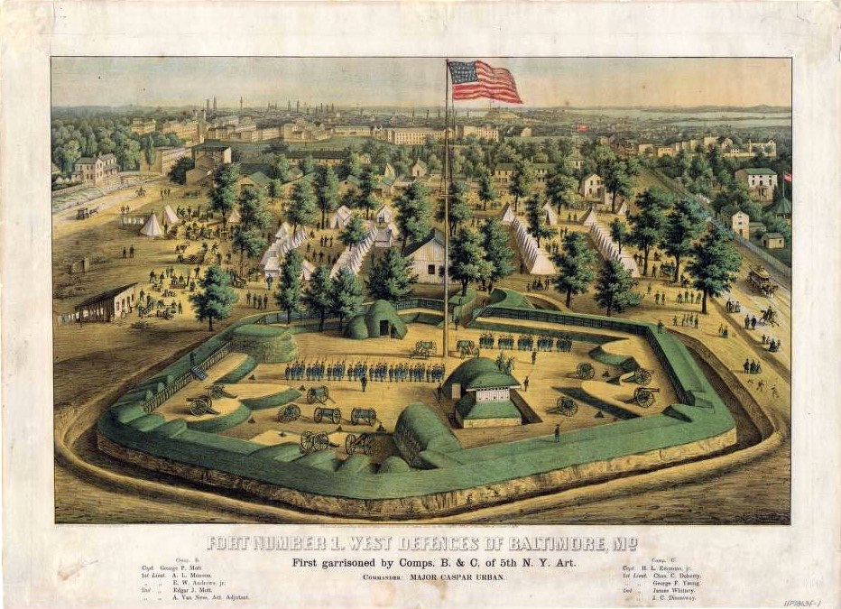

![]()
Over a year ago, I organized and led a bike tour of Civil War history in West Baltimore for my work Baltimore Heritage. In researching the history of Fort No. 1, an earthen fortification on West Baltimore Street where Bon Secours Hospital is located today, I turned up an unexpected story under the modest headline “Flag presentation.”
On the evening of July 20, 1863, a little less than a month after U.S. Secretary of War Edwin Stanton’s General Order 143 created the U.S. Colored Troops, a group of free black laborers assembled to present an American flag to a group of Union troops including two companies of black Union soldiers led by Colonel William Birney. The account of the ceremony in The Baltimore Sun recorded speeches by Col. Birney and Col. Donn Piatt and opens a window onto a truly unique moment in our local and national history as people in Baltimore, both black and white, witnessed the emancipation of enslaved people and saw them armed to fight against the Confederacy. I’ve shared a full excerpt of the account below with a handful of photos to help illustrate the scene.

Flag presentation - Yesterday evening about 6 o’clock, the colored laborers who have been working on the various fortifications assembled at fort No. 1, (Fort Davis,) situated near Stuart’s place, on Baltimore street extended, for the purpose of presenting to the military authorities a national flag, which they had purchased to be placed on the above manned fort. Two companies of Col. Birney’s colored regiment were present, as were also two companies of the Fifth New York Battery. Gen. Milroy and staff were present, also nearly all the members of Major Gen. Schenck’s staff. Col. Birney made the presentation on behalf of the colored laborers, and Col. Donn Piatt, on the part of the government, received the flag.
Colonel Piatt – In behalf of the colored laborers on this fort, I have the honor to present to you, for the United States, the flag whose folds are now, for the first time, given to the breeze. It is a token of gratitude from men who, after having been long outlawed from our civilization, have been allowed to hope they have at last a country. Who that is not one of them can tell how deep and fervent is that sentiment! With what grateful love they turn to that banner which whispers to them hope and trust in God! To know it fully one must have himself felt the unutterable yearning for deliverance which for two centuries has filled with its agony the hearts of the laboring men of Maryland.
It did seem to them that God had forgotten that they were cast out from His mercy to be trodden under foot of men. The heavens were overcast with the thickening signs of a coming rebellion, but there was no bow of hope for the slave. Stormy words of menace swelled high on every breeze from the South but the hardy Northern mariner would not hear them in the blinding mist of the ocean; the lumberman did not cease his swift blows on the mountain oak, or the merchant to pore over his ledger, or the farmer to drive his plow, and the politician laughed at the speeding calamity as a sixty days’ bubble. – But God that sitteth in the heavens remembered. He meant to teach this nation. Victory was not a perch upon our banners, the plague was not to e stayed, until the unclean thing was put out of the camp. The inexorable logic of events produced the proclamation of freedom by President Lincoln; and colored men, both free and slaves, thanked God. It was then their hearts were wedded to the stars and stripes.
The flag they present you to-day is in token of their loyalty. Their hearts are true. Whoever else may be swayed from duty, the black remains firm. Pluck him from the very core of rebeldom, and he is a true man. You may trust him. All his aspirations are for the sake – of the right – the triumph of the nation. For his, the success of traitors is his own degradation, the dishonor of his family, the doom of his race to perpetual infamy.
You may regard, sir, the presentation of this flag as implying the readiness of the men of color to defend it. You have witnessed their alactricity in springing to the lines of these fortifications when Baltimore was menaced, their cheerfulness in volunteering their labor, their patience in its prosecution. These forts around the city will be monuments to their patriotism. With equal alactricity, sir, do they respond to the call of the country “to arms.” When the Goddess of American Liberty hands them the musket, they accept it with stalwart and ready arms, thankful to Providence that their frugal diet has prepared them for the soldier’s rations, that their life of continuous labor in the open air has inured them in advance to the hardships of campaigning, and that they have not now to learn patience and obedience, those two virtues of the soldier.
This battalion, here present, of colored men, armed with the muskets and clothed in the uniform of the United States, proves that the free colored men of Baltimore respond at once to the call of the country. They feel that their zeal will meet with the approval of the good men of this city and country: that the men who are saved from the perils of war by their devotion, will protect their wives and children when they are absent. They confide their little ones, so dear to them, to the honor of the citizens of Baltimore. Their dearest hope is that this war may give them an opportunity to vindicate their manhood; that when the blood of the white man and the black shall mingle on the same fields, for the same holy cause, they may clasp hands over the grave of buried animosities and wrongs, having together achieved Liberty and Union, now and forever one and inseparable.
Colonel Don Piatt, chief of Gen. Schenck’s staff, responded as follows:
In the name of the Eighth Army Corps of the Middle Department I accept this beautiful flag, purchase with the hard earnings of the workmen, to adorn the fort their hard labor erected.
In recognizing he fact I feel deeply that this is no ordinary presentation. Given and accepted as the banner is, I see an epoch in the history of our flag. Heretofore it has been the emblem of our power. Hereafter it will be that and the emblem of humanity as well. In the past it has carried in its folds only a portion of our Declaration of Independence; now it emblazons to the world every sacred word of that immortal instrument.
These are the closing scenes of our revolution. What our fathers began we hasten to complete. Our first act, achieved our independence as a nation. This, the last act, proclaims the independence of the man. This plan, running through a complicated chain of grave events, is evident to the thoughtful mind. It is the design of the Almighty. We have been tried, chastened, humbled, and, let me hope, with evidence before me, not found wanting.
Who could believe that the Divine hand that held through long centuries this vast continent an unbroken solitude, that on it at last the oppressed of all nations should find a refuge and a home; who guided the frail bark of Columbus to its destination.; sustained the pilgrims, and wrought almost miracles for our revolutionary forefathers; who, I ask, could believe that this interposition was made in behalf of a people to be known only as cunning workers in wood and iron, whose flag should represent only a vast accumulation of worldly wealth – a wealth built upon human misery – to accomplish which we had gravely announced through our highest tribunals to the world that we had four millions of subjects lying outside the sympathies of our people who had no rights a government was bound to respect? The man who could believe that is an infidel of the meaner sort, whose poor brain is in keeping with his barren heart.
It was not so designed. The Almightly has written upon all his works that a lie cannot live, and truth alone is immortal. The plague spot had to extirpated, or our people die with it. Through the long years of this apparently peaceful prosperity the South was rapidly relapsing into savage barbarism, while at the North manhood was silently being sucked from our hearts.
We had extended our dominion from sea to sea; we had changed the song of the wild bird to the busy hum of human life; we had built great cities, peopled vast solitudes, and spread the canvas of our commerce over every seal and all this while we were sinking our spiritual nature and driving the heroic from our souls.
The war was a necessity. We had attempted to live down the edicts of the Almighty and the hand of death was on us. Thomas Jefferson had written that all men were born equal, and in the prophetic agony of his great soul he foretold ruin to his people for the attempt to deny what God had decreed. Better this fearful war, better these dark fields of carnage, better the ruined homestead and wide-spread desolation, than a life of dishonor, where decay comes in advance of death, and we move and crawl in sickening rottenness.
Save that we may go through the fiery ordeal and come out purified, let us take no credit to ourselves. The course of human events written of by Jefferson moves on beyond our control. We cannot change and, above all, we cannot stop their march, or take in our own hangs our destiny. I read of a German who, being shown the Rhine near its source, put his huge foot across the rivulet, and as he dammed the stream remarked to his companions, “won’t they wonder down there when it ceases to run.” So, now, other simple minded men are putting their feet in this stream of events, and are expecting that the great river below will cease to run.
This flag presentation, the first in the history of this war, happens fortunately in Baltimore. On this spot it has a strange significance. Here was first composed the great national hymn to our banner that must go ringing down the aisles of time, so long as its stars and stripes are beautiful in our eyes, and its blood-stained folds dear to out memories. Here in Baltimore, the flag has associations dearer, purer and sweeter than elsewhere. Here we have brave hearts and stout arms to defend it, and here, above all places, then, is the spot to fling it out brighter and dearer for the truths it again promulgates.
After the speeches a salute of thirty-six guns were fired, cheers given, and the crowd dispersed.
Excerpted from LOCAL MATTERS The Sun (1837-1987); Jul 21, 1863; ProQuest Historical Newspapers: Baltimore Sun, The (1837-1987) pg. 1. Link.
Reuse
Citation
@online{pousson2013,
author = {Pousson, Eli},
title = {“{These} Are the Closing Scenes of Our Revolution” at {Fort}
{No.} 1 on {West} {Baltimore} {Street}},
date = {2013-01-03},
url = {https://elipousson.github.io/posts/2013-01-03-these-are-the-closing-scenes-of-our-revolution-at-fort-no-1-on-west-baltimore-street},
langid = {en}
}